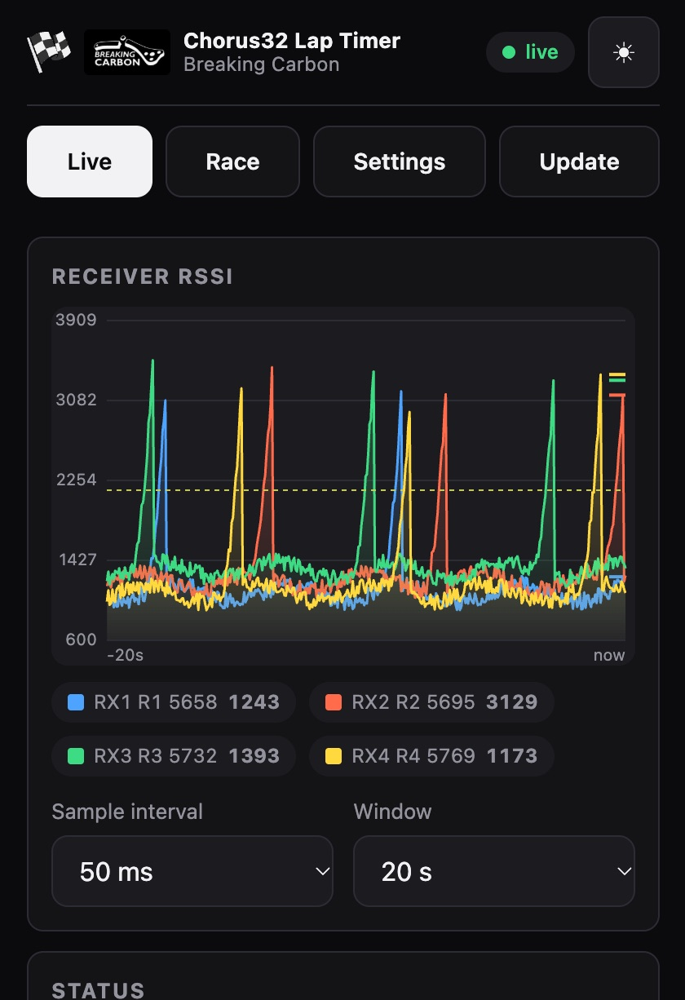

Setting up at a field, getting the thresholds right, and running a round without looking away from the sky.
The timer makes its own network. It is open, with no password, and it has no internet — everything the page needs is served from the timer.
Look for Chorus32_naco_ followed by the suffix set in its
settings. If you run more than one timer at a field, give each its own
suffix and its own WiFi channel so they stop fighting.
Most phones offer it as soon as you join. If yours does not, open
192.168.4.1 in a browser.
Android may complain that the network has no internet and quietly drop off it. Tell it to stay connected.
There are four pages: Live for the raw signal plot, Race for running a round, Settings for the hardware, and Update for new firmware.
The timer has to sit at the gate, and the ESP32's access point is not strong. If the pit area is a long way from the track, the phone drops off before you want it to. Two things help.
Set the WiFi protocol to b. In Settings, the protocol choice is between b (longest range) and bgn (fastest). There is nothing to be gained from the speed — the timer sends short lines of text, not video — so pick b and take the range.
Or add a repeater. A pocket 2.4GHz repeater placed between the gate and the pits rebroadcasts the timer's network, and phones join the repeater instead. The PIXLINK 300Mbps repeater is the one in use here: cheap, USB powered, and it has an RJ-45 port if you ever want it wired. The timer's AP is open with no password, so there is no key to type during setup.
Repeating on one radio roughly halves the available bandwidth and adds a little latency. For a stream of short ASCII lap messages that is invisible — and it is a good trade against the phone dropping off mid-round.
On Settings:
How many RX5808 modules are actually fitted on the board. One per pilot you can time.
Match each one to a pilot's video transmitter. Pilots should be spread across the band — two quads on adjacent channels will show up in each other's receivers.
Power up a quad at 25mW on any channel, put it near the timer, and press Calibrate RSSI.
Running calibration with no active VTX anywhere leaves the timer unable to detect laps at all until you run it again properly.
Multiplexing used to time-share one receiver across several pilots. It credited mistimed samples to the wrong pilot, which showed up as a pilot scoring somebody else's laps, so it is off by default.
The consequence: a pilot enabled beyond the number of fitted receivers gets no receiver and is simply not timed. The Race page warns you when that happens, rather than letting you find out at the end of the round.
This is the one setting that decides whether the timer works, and it is worth five minutes before the first round.
Each receiver reports a signal strength many times a second. Sitting on the ground it is low and noisy; as a quad comes through the gate it climbs, peaks, and drops away. A lap is counted when that signal crosses the pilot's threshold on the way up.
Laps fire while the quad is on the far side of the field, or from another pilot's transmitter. You get extra laps that are far too short.
The pass never reaches it and the lap is silently missed. Lap times come out as a clean multiple of the real lap.
The roster on the Race page shows a live bar per pilot with the threshold marked on it, and the Live page plots the raw trace. Have somebody fly a lap and watch where the peak lands: you want the threshold clearly above the noise floor and clearly below the pass peak.

Minimum lap time is the backstop. It throws away a second crossing that arrives impossibly soon after the first, which is what a quad hovering next to the gate looks like. Set it a little under your fastest realistic lap.
Only ticked pilots are in the race. The count is shown on the roster header, and you get a warning if there are more of them than there are receivers.
The default is 20 laps. Timing carries on past the flag, so an extra lap after the target is still recorded rather than thrown away.
Lap beep is a tone on every crossing. Callouts speak the lap and the time out loud, in English or Arabic, using a voice from the phone. Press Test to hear the selected voice before the round rather than during it.
Standings and lap times fill in live. Previous rounds stay in the lap history until you clear it.
The timer owns the lap times, not the phone. When the browser reconnects it asks for everything again and the laps it missed appear, with their original times and no duplicates. A dropout costs you the live view and the callouts while it lasts — it does not cost you the round.
The Race page has a Keep screen awake option, and it is honest with you about what it can do.
A web page served over plain HTTP — which is what the timer serves, on its own network, with no certificate — is not allowed to hold a phone's screen on. Browsers reserve that for secure origins. The page tries the one trick that is left, and tells you when it did not work.
iPhone: Settings › Display & Brightness
› Auto-Lock › Never.
Android: Settings › Display › Screen
timeout.
Set it back afterwards, or the battery will be gone by the drive home.
If the screen does sleep, nothing is lost. See the note above — the laps are on the timer, and they come back when the page reconnects.
The original Chorus RF Laptimer app works with this timer over WiFi, and it is the right choice if you already run your events from it, or you want its heat and pilot management.
From Downloads. It is not on the Play Store, so Android will ask you to allow installation from your browser or file manager.
Same network as the web page.
Pick the TCP connection in the app and point it at
192.168.4.1.
This fork adds its own commands but never alters the existing ones, on purpose: an app that worked with an older Chorus timer keeps working with this one. The web page and the app can even be connected at the same time.